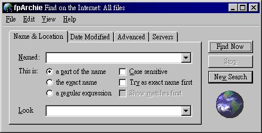

取 得
軟 體 名 稱
fpArchie
檔 案 名 稱
fpar09b1.zip
安 裝
將 取 得 的 壓 縮 檔 解 到 一 個 你 選 擇 的 目 錄 下 ( 例 如 ─ C:\Program Files\fpWare )。
執 行 Setup 進 行 安 裝。
使 用「開 始 / 程 式 集」,選 取 fpArchie0.9 即 可 進 入。
進 入 後 , 便 可 見 到 如 下 圖 的 主 畫 面:
